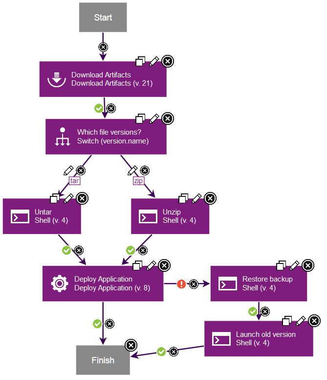

Component processes
A component process is a series of user-defined steps that operate on a component's artifacts. Each component has at least one process that is defined for it and can have several.
A component process can be as simple as a single step or contain numerous steps and relationships. The switch step, for instance, creates conditional processes. For example, you might take artifacts from a source like an IBM® Anthill Pro project and map the artifacts that get deployed to an HTTP server into one component. Then, you might map the artifacts that get deployed to a Java™ Platform, Enterprise Edition container to another component. You might map the artifacts that get deployed to a database to yet another component. Or, to take another example, a single-component deployment might consist of two processes: the first moves component files to a target server on Friday night (a lengthy operation), while the second deploys the files Saturday morning.

Component processes are created with the process editor. The process editor is visual drag-and-drop editor where you can drag process steps onto the design space and configure them as you go. As more steps are placed, you visually define their relationships with one another. Process steps are selected from a menu of standard steps that replace typical deployment scripts and manual processes. IBM DevOps Deploy (Deploy) provides steps for several utility processes, such as inventory management, and workflow control. Other process steps are provided by plug-ins. Plug-ins provide integration with common deployment tools and application servers, such as WebSphere®, Microsoft™ IIS, and many others. Without any additions, Deploy provides plug-ins for many common processes, such as downloading and uploading artifacts, and retrieving environment information. A component process can have steps from more than one plug-in.
Like other processes, component processes begin with the Start step and must end with the Finish step.
A component process is defined for a specific component. A component can have more than one process that is defined for it, but each component requires at least one process.
For example, deploying an EAR file to an IBM WebSphere Application Server typically consists of the following operations:
- Transfer the EAR file to the target server.
- Stop the target server instance.
- Run wsAdmin with deployment properties.
- Start the target server instance.
- Verify that the deployment succeeded by accessing a specified URL.
The WebSphere Application Server - Deploy plug-in provides a configurable process step for each operation.
A frequently used component process can be saved as a template and applied later to new components.
Component processes are run by Deploy agents on hosts. One instance of a component process is started for each resource that is mapped to a component in the target environment. See Resources.